Festival de Pornichet

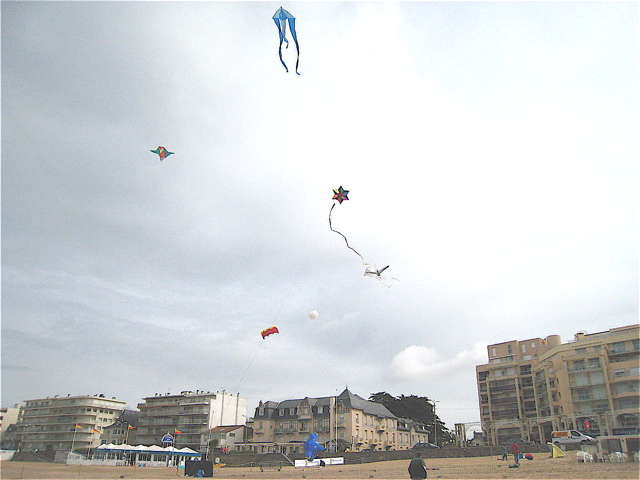
Pornichet, 1er Mai. Les cerfs-volants sont dans le ciel, même si ce n'est pas un week-end. D'ailleurs on finira samedi et pas dimanche. Aujourd'hui, il fait beau, du vent (entre 25 et 35 km/h) ça volera de partout !

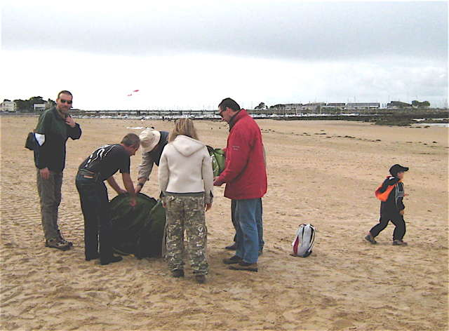
Evidemment les tentes 2 secondes neuves offrent toujours leur content de surprise, d'amusement et de conseils aussi divers qu'inappropriés...

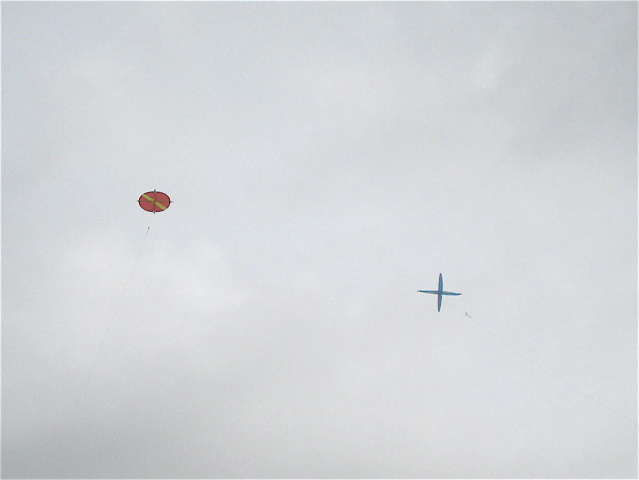
Yannick met toujours plusieurs CVs en l'air. Les 2 rotatifs ne posent jamais de problèmes, ils sont stables comme tout (l'effet gyroscopique sans doute !) maintenant qu'il les a renforcés...

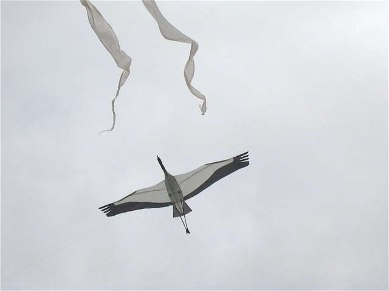
J'ai monté ma grue qui se tient bien dans les 25 km/h de vent. J'ai trouvé encore une modif à faire pour éviter les excursions en cap liées aux mises à plat en haut de fenêtre... Bricolage de terrain à concrétiser à la maison...

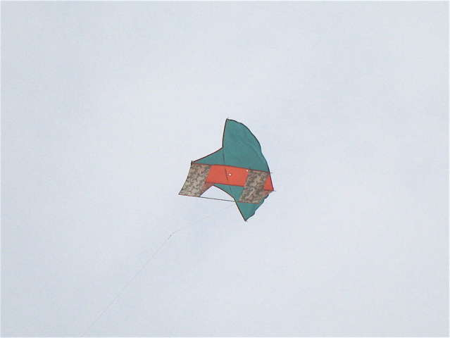
Le Météo en doublure de Jean-Marc se comporte bien aussi, la porosité du tissu aidant...

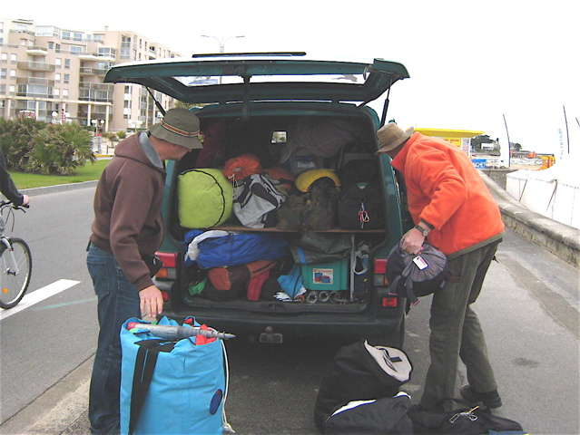
Les Anglais d'AKF sont présents et ont amené un peu de matériel !

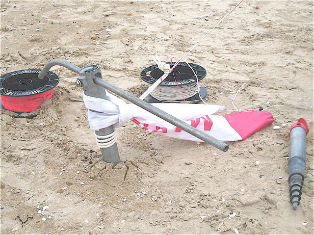
Ils ont aussi des piquets d'hommes, résidus de mâts d'antenne de l'armée allemande...

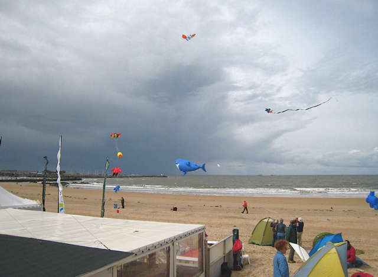
Ils ont fait voler une petite baleine bleue (plutôt un orque ?) mais monteront samedi la grosse qui balaiera tout le terrain comme d'hab...

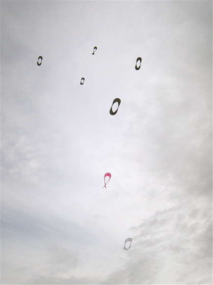
Zézé a ramené ses CVs sans nom qui volent impeccablement en grappes denses, avec les variantes Poissons !

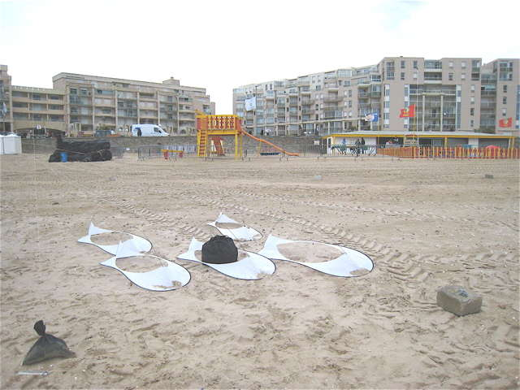
Les blancs sont en réserve, ou en attente !

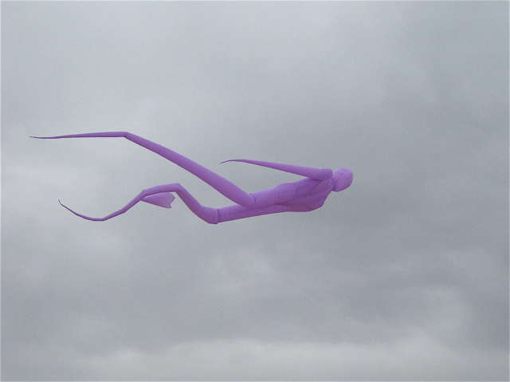
Au fond, un très beau Fantôme en nage sous-marine langoureuse.

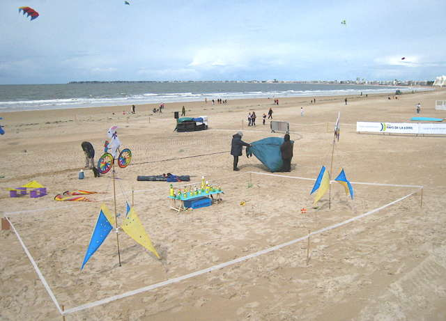
Jean-Marc a fabriqué une petite table pour les mini-personnages du Jardin de Marie-Claude !

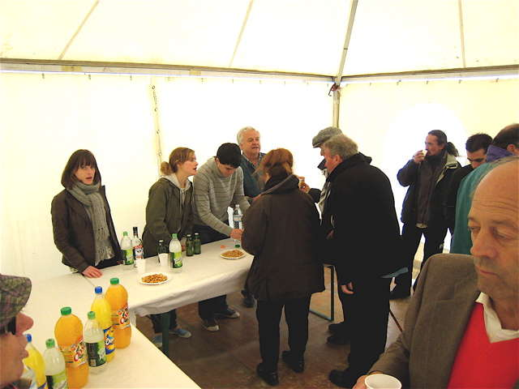
Comme avant chaque repas, apéritif gentil sous la tente. Il y a plein de jus de fruits et sodas pour ceux qui veulent, et quelques adjuvants pour les autres !

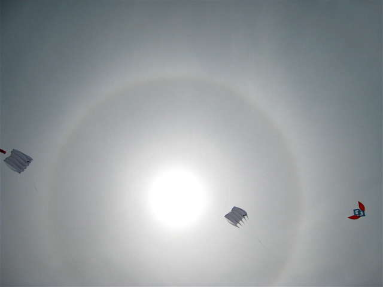
Au-dessus, un voile de cirrus, prouvé par le halo circulaire provoqué par les réflexions du soleil sur les paillettes de glace, les nuages de gouttelettes d'eau ne provoquent pas cet effet...

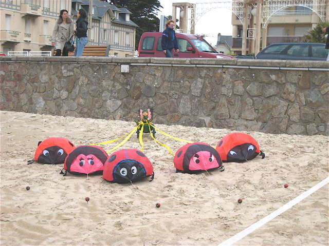
Claude fait encore bosser ses Cox en attelage...

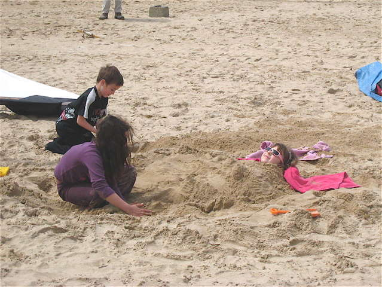
Bain de sable pour les petites filles, pourvues en passant d'attributs de grandes...

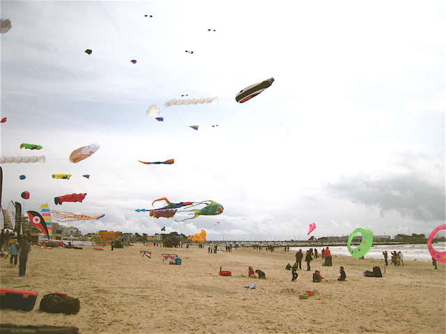
Bon, petit à petit, le ciel s'est bien meublé, normal, le festival commence à 14 h (en théorie !)...

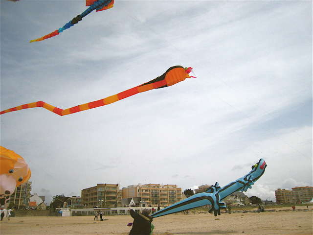
Dans les gonflables qui ne doivent pas poser trop de problèmes, ce Naja orange impressionnant !

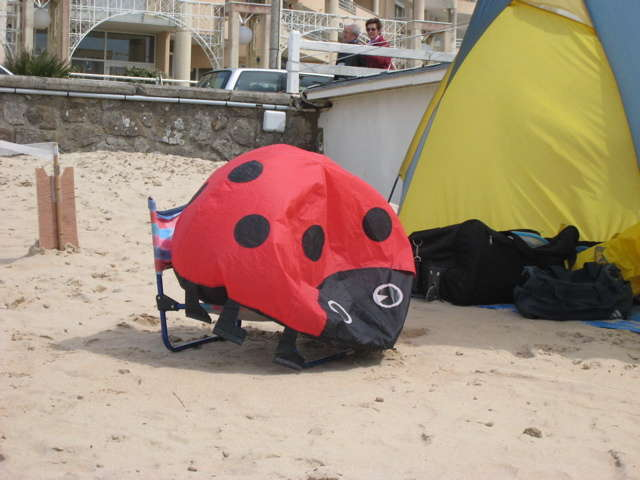
L'été arrive à pas de loups, avec la chaleur, ma coccinelle ne résiste pas à l'envie d'une petite sieste, bien gagnée à sauter toute la matinée...

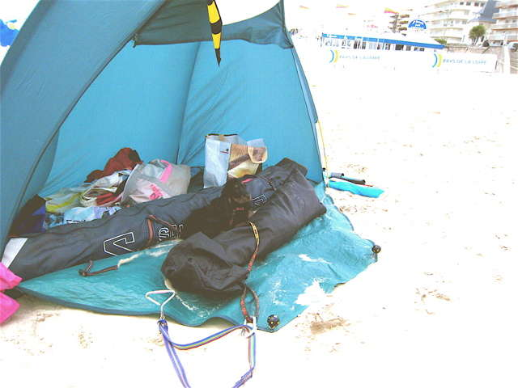
Django Lebourgeois (cocker de 3 mois) aussi s'initie au cerf-volant à sa façon, entre deux sacs !

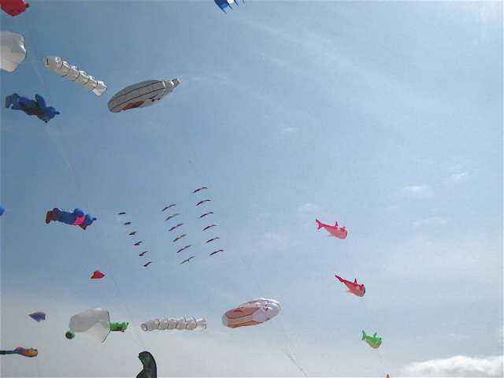
Parmi les nombreux gonflables, nounours, poissons, personnages de BDs etc. Le team Impossible (à plus de 1 ce week-end...) fait un beau show de trains de 2 lignes...

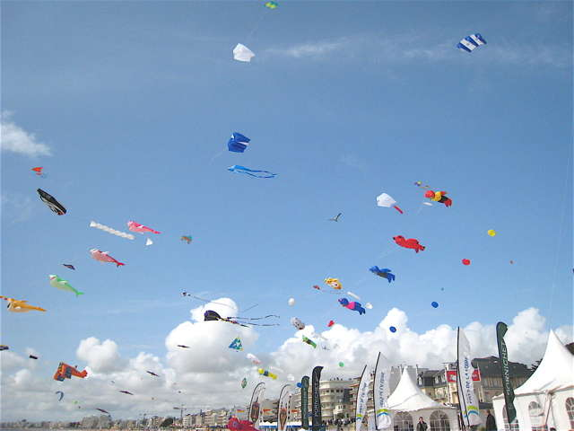
Les gonflables côté face, en haut, plein de flow-forms, en bas des personnages divers et variés comme le Snoopy en avion rouge (Red Baron...) et sans flow-form...

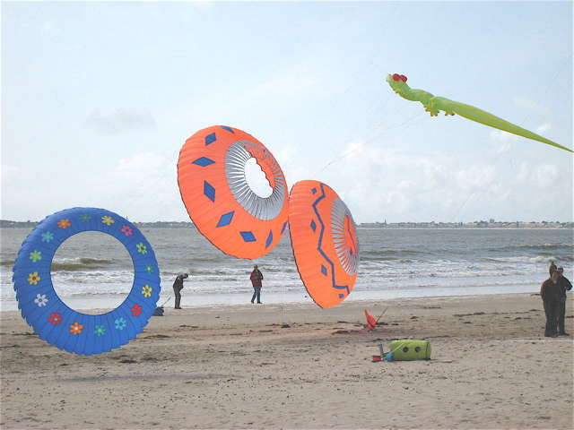
Sur la plage de très beaux bols... grâce aux piquets allemands !

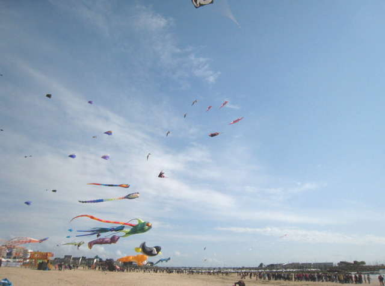
Entre les Impossible, les Le Mans et les St-Brévin, on forme un petit méga-team pour le plaisir des acteurs et des spectateurs...

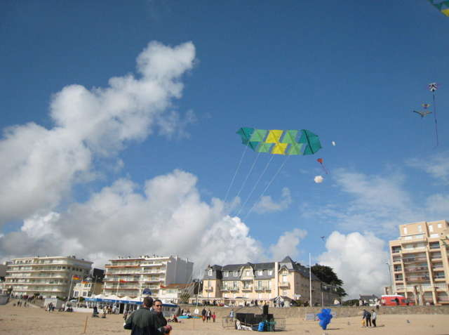
Ce beau Multi-Pelibox volera bien, mais pas longtemps, sans doute un peu fragile pour ce vent...

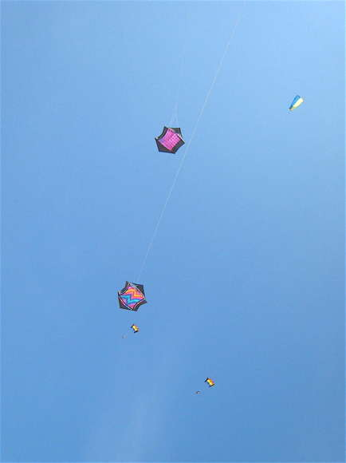
Ces très beaux Rokkakus, chefs d'oeuvres de couture, prouveront que cette forme a encore son mot à dire par tous les temps dans les rencontres...

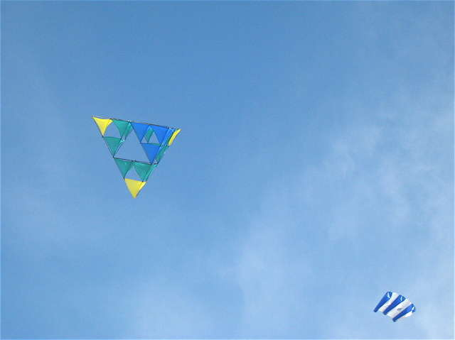
Ce Bell qui compte beaucoup moins d'éléments que celui vu à Berck reste toujours d'une exemplaire stabilité...

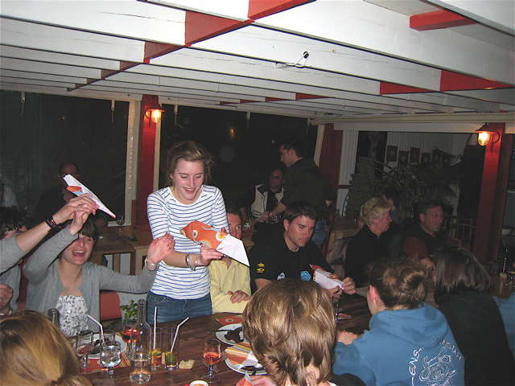
Comme tous les soirs, apéritif-dîner chez Julo-Le-Bulot, avec indigestion de bulots et confiture d'oignons en entrée...

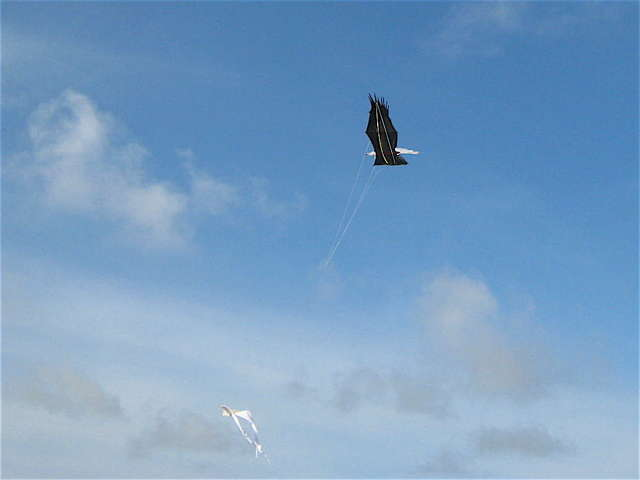
Le lendemain, vent faiblard à nul. Cet aigle volettera un court instant seulement, dommage !

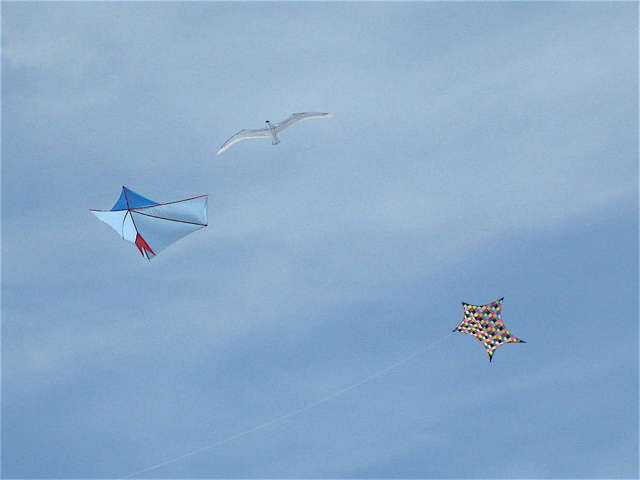
Dans le vent léger, je sors mon Goéland, Jean-Marc son Jessica en doublure (qui se déforme beaucoup mais porte bien) et Yannick son nouveau Jimmy-Pentagon en mosaïque de spi, très esthétique (et quel boulot) !

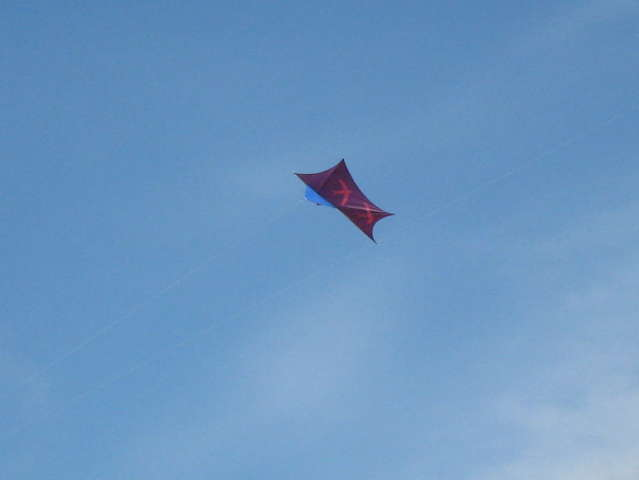
Claude sort aussi un CV light, son Jimmy à hirondelles...

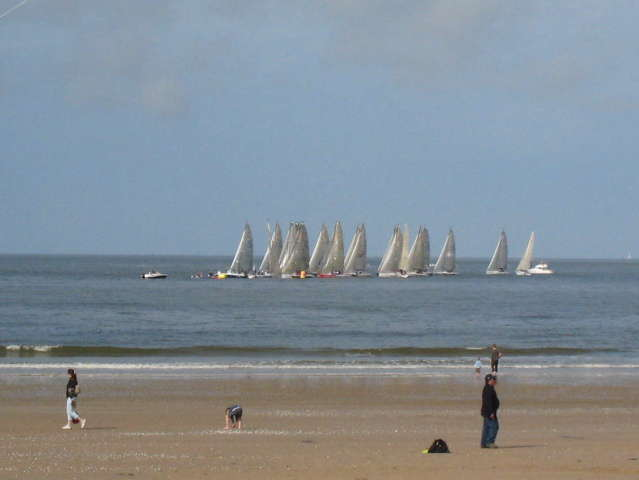
Au large, les voiliers se font une petite régate, avec un départ en masse spectaculaire !

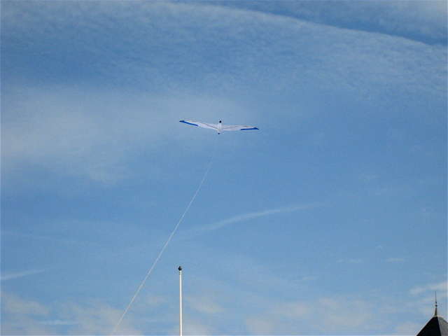
Le vent est léger, mais il suffit pour mon vieil Albatros. Enfin, vieil, j'ai changé la toile, une des deux cannes des ailes et quelques ficelles... Il est reparti pour une deuxième carrière !

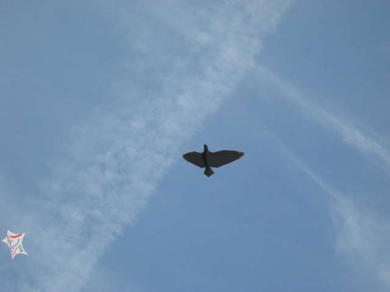
Un autre oiseau vole pas loin. La forme générale est agréable, un peu anguleuse, peut-être, mais ça lui donne un look moderne...

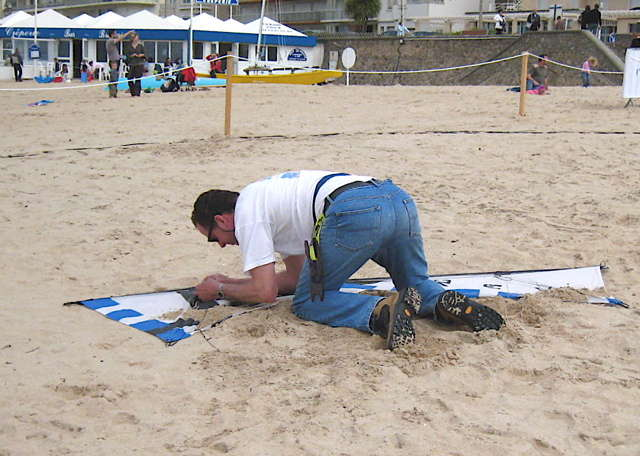
Yannick change de style. Il a coupé 2 lignes de son révo dans une rencontre fâcheuse et il raccourcit les 2 autres d'autant...

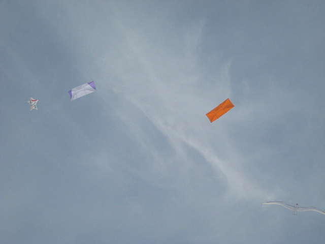
Les Anglais volent avec ces rectangles bien tendus et très stables.

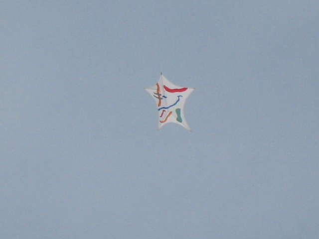
Yannick a un autre Jimmy, plus léger, et qui monte sans problème...

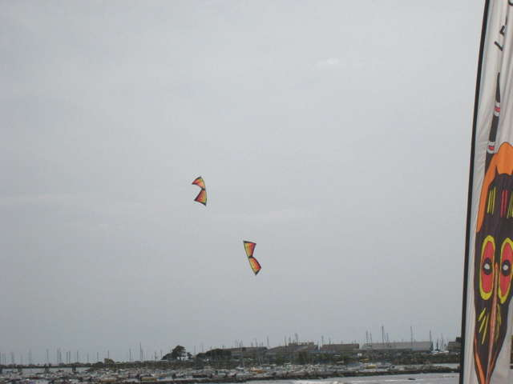
Les démos se poursuivent avec la paire de Saint-Brévin, Mickael et Bruno en Révos !

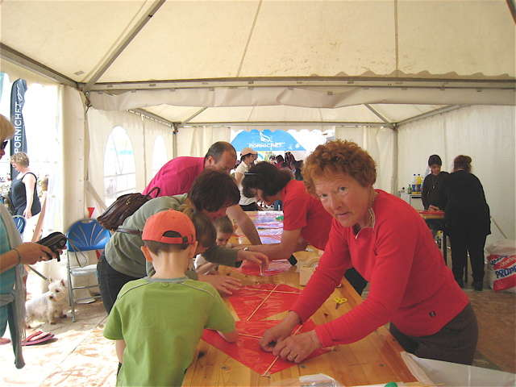
La municipalité a aussi offert un atelier (gratuit) pour les enfants qui viennent monter Eddies et Coccinelles. La gratuité fait que la demande est importante, et le côté didactique est un peu obnubilé par le souci de rapidité et l'indifférence technique des demandeurs...

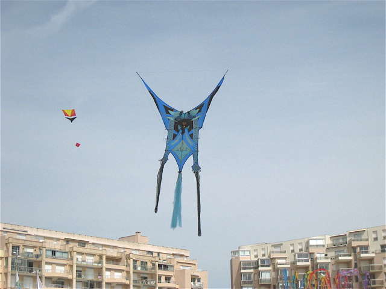
Claude sort courageusement ses grands CVs, comme je ferai avec mon Albatros. Nous courons du haut en bas de la plage pour qu'il y ait quand même quelque chose d'intéressant en l'air...

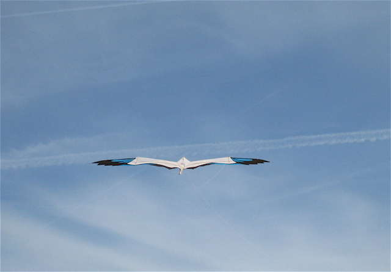
Claude sort aussi son oiseau blanc-bleu, toujours pour des courses éphémères...

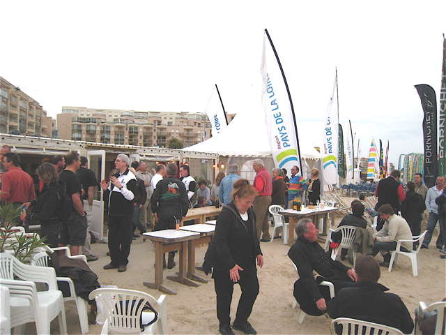
Ce soir, surprise, apéritif et dîner chez Julo ! Le manque de vent fait que la température est élevée et on reste en terrasse...

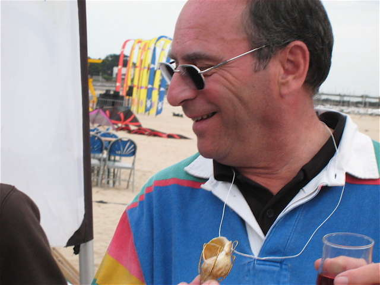
Des tonnes de bulots ont disparu, et Dominique est décoré de l'ordre du Bulot d'Or pour services rendus aux cervolistes dans ce domaine !...

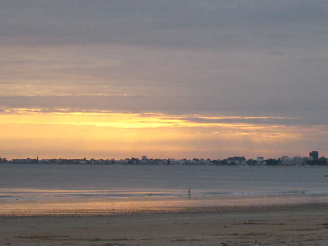
Le soleil est encore haut, même si ses rayons percent à travers une couche de nuages ! Ce n'est pas un problème, on fera durer le dîner jusqu'au vol de nuit...

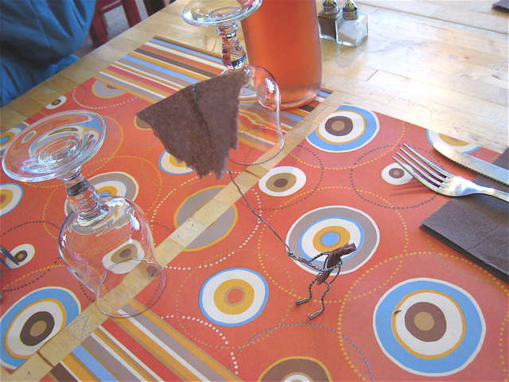
En attendant le plat, je fais un petit cervoliste avec un muselet de champagne...

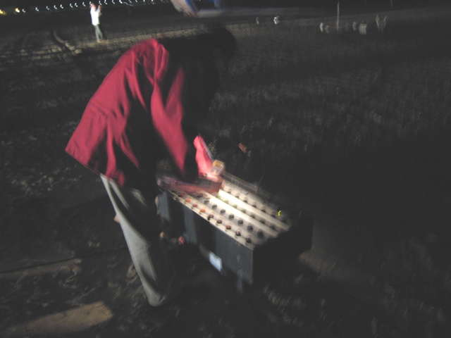
Vol de nuit, avec pyrotechnie incorporée. Le spécialiste a préparé sa console, plus qu'à ne pas se prendre les pieds dans les fils...

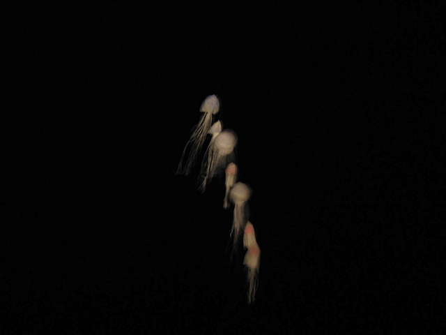
Le vol est parti, un ensemble de méduses se sont prises dans un fil...

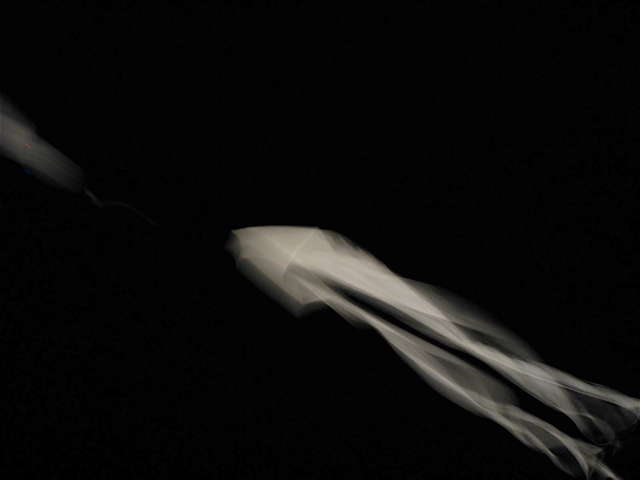
Dans la nuit, un grand Pyrodelta. Pour voler, j'ai parié courageusement sur l'Albatros et j'ai fini par le monter aussi, mais assez haut, et peut-être un peu loin pour la magie à créer !

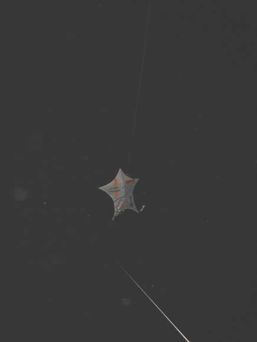
Yannick ne déroule pas assez de ligne vers la mer et n'arrive d'abord pas à monter son Pentagon !

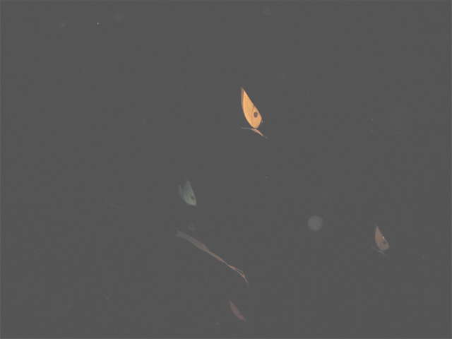
Zézé a mis 15 papillons à disposition de ceux qui veulent, et ils meubleront bien les basses couches, même si l'inexpérience entraîne quelques emmêlages homériques...

Des salves de feu d'artifice viennent donner un rythme au spectacle et le diviser en séquences qui renouvellent l'intérêt...

Les organisateurs n'ont pas voulu un feu d'artifice grandiose et final, mais un spectacle commun, un opéra varié et coopératif, et je trouve cela pas mal. Il faudra voir l'avis des spectateurs externes...

Dominique fera quelques va-et-vient pour montrer son Georges Peters, magnifique dans l'éclairage nocturne...

Au petit matin, tôt, les teams de pilotable sont déjà en train de s'entraîner. Pourtant, il n'y a pas de compétition, juste le fun !

Jean-Michel prépare son chien pour le vol, il n'a pas remarqué un petit ajout bien placé des deux complices toujours prêts pour une bêtise !

Les Awitas sont en l'air malgré un vent qui descendra encore toute la journée, quand la brise de mer viendra s'opposer au modeste vent de terre. Leurs nouveaux deltas bleus demandent seulement un petit souffle pour rester en vol...

Avec le soleil et l'absence de vent, la plage est envahie d'estivants précoces. Il devient difficile de défendre les terrains. Certains courageux se baigneront même, surtout des enfants, il faut le dire...

Le vent au sol est plus sensible à la brise de mer que le vent en altitude, et les fils se croisent à 90° entre mon Rokkaku à 240 m et le Faga de Jean-Marc à 350...

Fin du festival, je roule un peu sur les petites routes du pays nantais à la recherche d'un coin tranquille et pittoresque pour dormir ! Quelquefois, évidemment, il est difficile de doubler...

Je finis par trouver une place sympathique et tranquille autour de l'église de Freigné, pas loin de l'Erdre, au nord d'Ancenis. Un joli manoir de granit brun clair enjolive mon paysage...

Le lendemain, je reprends la route, bordée de kilomètres de pommiers sous filet...

Je m'arrête pour voir le château de Sablé : un beau parc, mais le château n'est pas terrible... Et puis autoroute pour finir, soigner vite mes coups de soleil et faire mon reportage...
Pornichet : La plage est toujours aussi belle, l'accueil inimitable, les bulots délicieux et abondants, le vent de terre cette année n'était pas favorable, mais on a bien volé quand même. Pas tout le monde, il y a de "grands" cervolistes qui ne volent que par un seul type de vent, pour moi, c'est inconcevable (et pas très correct quand on est invité...), j'ai toujours un cerf-volant en l'air, de Force 0,2 à Force 8... A l'année prochaine, donc, pour de nouvelles aventures !